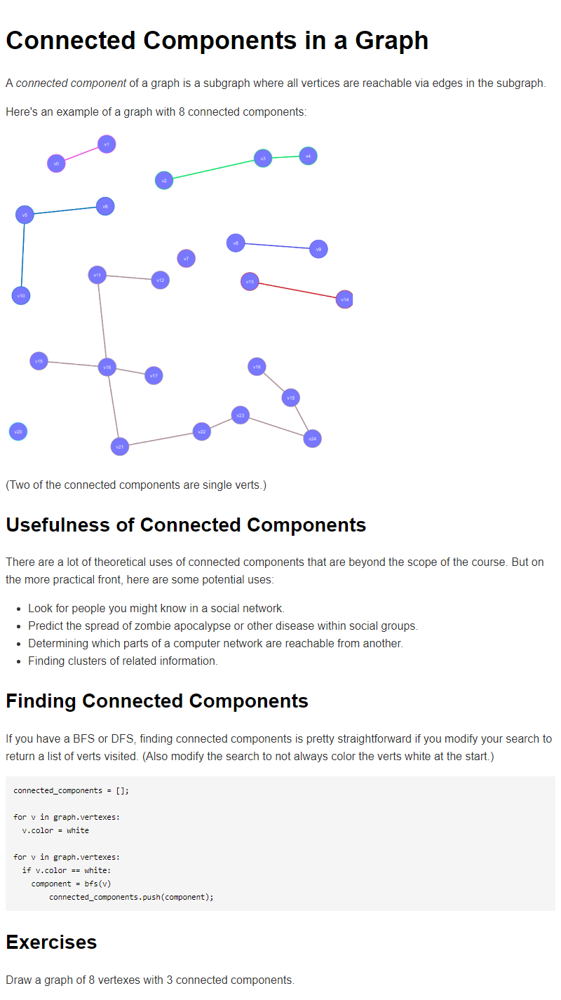

A connected component of a graph is a subgraph where all vertices are reachable via edges in the subgraph.
Here’s an example of a graph with 8 connected components:
(Two of the connected components are single verts.)
There are a lot of theoretical uses of connected components that are beyond the scope of the course. But on the more practical front, here are some potential uses:
If you have a BFS or DFS, finding connected components is pretty straightforward if you modify your search to return a list of verts visited. (Also modify the search to not always color the verts white at the start.)
connected_components = [];
for v in graph.vertexes:
v.color = white
for v in graph.vertexes:
if v.color == white:
component = bfs(v)
connected_components.push(component);